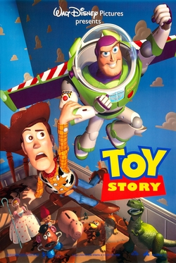
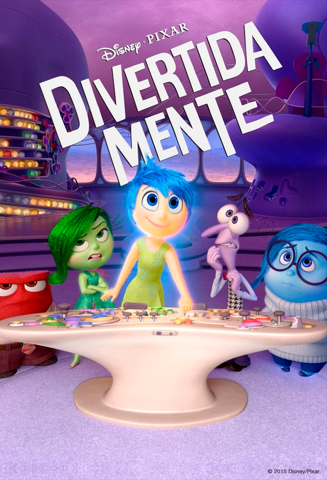

Toy Story

Toy Story conta a história de Woody, um boneco caubói que é o brinquedo favorito de Andy e o líder dos outros brinquedos do garoto. Sempre que Andy sai do quarto, os brinquedos ganham vida e passam a agir como pessoas. Tudo muda quando Andy ganha de presente um novo brinquedo, Buzz Lightyear, um boneco que acredita ser um verdadeiro patrulheiro espacial enviado para proteger o universo. Com a chegada de Buzz, Woody sente que está perdendo seu lugar como brinquedo favorito de Andy e começa a sentir ciúmes do novo companheiro. Os dois acabam se envolvendo em uma série de confusões e se afastam dos outros brinquedos. Perdidos e longe de casa, Woody e Buzz precisam deixar as diferenças de lado e trabalhar juntos para conseguir voltar para Andy. Durante a aventura, os dois desenvolvem uma forte amizade e aprendem que não precisam competir pelo carinho de Andy. Woody também percebe que Buzz pode ser um grande amigo, enquanto Buzz começa a compreender sua verdadeira natureza como brinquedo. No fim, os dois retornam para casa e passam a fazer parte de uma grande amizade, mostrando a importância da lealdade, da amizade e de aceitar as mudanças.
Divertidamente

O filme *Divertida Mente* apresenta a história de Riley, uma menina que passa por grandes mudanças depois que sua família se muda para outra cidade. Dentro de sua mente, cinco emoções — Alegria, Tristeza, Raiva, Medo e Nojinho — trabalham juntas para controlar suas atitudes e ajudá-la a lidar com as situações do dia a dia. Com a mudança, Riley enfrenta sentimentos de tristeza, medo e insegurança, enquanto tenta se adaptar à nova realidade. Ao longo da história, Alegria percebe que a Tristeza também é importante para o equilíbrio emocional de Riley. O filme mostra que não é necessário esconder sentimentos negativos, pois todas as emoções têm uma função e fazem parte do crescimento. Dessa forma, *Divertida Mente* ensina que compreender e aceitar os próprios sentimentos é fundamental para enfrentar mudanças e construir relações mais saudáveis.